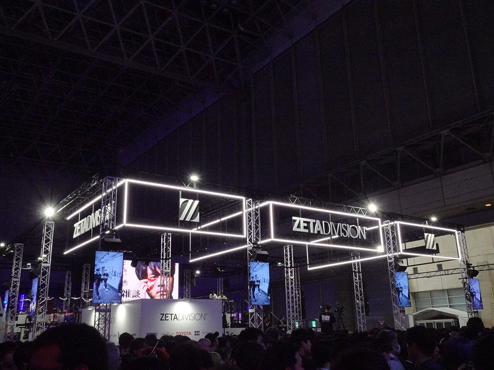

ZETA DIVISION
ゼータディビジョン
日本で最も知られたチームのひとつ。2022年に世界3位になった歴史を知ると応援がもっと楽しくなります。

写真：RuinDig/Yuki Uchida / CC BY 4.0
Overview概要
Players
選手(2026-11-16 時点)報道History歩み
東京を拠点とするゲーミングブランド「ZETA DIVISION」のVALORANT部門です。2020年4月に前身の「JUPITER」としてVALORANTに参入し、2021年7月に現在のチーム名に変わりました。2023〜2026年はVCT Pacific（アジア太平洋地域のトップリーグ）のパートナーチームとして戦い、2027年からも引き続きパートナーとして参戦します。
Playstyleプレースタイル
2027年のメンバーがまだ発表されていないため、プレースタイルは発表後に書き直す前提の下書きです。これまでは日本チームらしい連携の細かさと、試合中の指示役（IGL）を軸にした組み立てが持ち味として語られてきました。
2027見どころ
新フォーマットでは4年ぶりに日本国内での試合も予定されているとチームが発表しており、ファンイベントも準備中とのことです。新しいメンバー構成の発表にも注目です。
Profile
基本情報- 拠点
- 東京（運営会社 GANYMEDE株式会社 の本社は東京都港区）
- 2027年
- 2027〜2028年 VCT Pacific パートナー
Roster選手
PLAYER NOTESCLOSE
- SugarZ3ro：2021年12月加入。2026年シーズン終了後も非アクティブ扱いになっていない唯一の選手です。海外メディア（Sheep Esports、2026年11月10日）がCrazy Raccoonへの移籍見込みを報じていますが、チーム・本人からの発表はなく、記事本文も確認できていません（未確認）。
- eKo：2026年10月22日から非アクティブ（控え）扱い。本人がXで移籍先を探している（LFT）と投稿したとLiquipediaが記録しています。2027年の去就は未発表です。
- Absol：2025年12月にMURASH GAMINGから加入（公式発表）。2026年10月22日から非アクティブ扱い・LFT投稿ありとLiquipediaが記録。2027年の去就は未発表です。
- SyouTa：2025年12月にMURASH GAMINGから加入（公式発表）。2026年10月22日から非アクティブ扱い・LFT投稿ありとLiquipediaが記録。2027年の去就は未発表です。
Staff
スタッフWatch
注目選手PlayerSugarZ3ro
2021年末からZETAで戦い続けてきたIGLで、チームの指示役として長く中心にいた選手です（ただし移籍報道あり。発表を待って差し替えてください）。
Results実績
- 2023
VCT Pacific Last Chance Qualifier 2023 優勝（VALORANT Champions 2023 ロサンゼルスに出場）
- 2023
VCT Pacific 2023 リーグ戦4位・プレーオフ5〜6位
- 2022
VCT 2022 Stage 1 Challengers Japan プレーオフ 優勝
MORE (4)CLOSE
- 2022
VALORANT Champions 2022（イスタンブール）出場
- 2022
VALORANT Masters Reykjavík 2022 3位（日本のチームとして初の国際大会入賞と報じられています）
- 2021
VCT 2021 Masters Berlin 出場（13〜15位）
- 2020
First Strike Japan 2020 優勝（JUPITER時代）